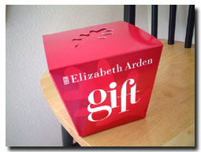
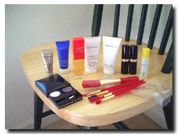

| ..*..*.. 2003年11月29日(土) 晴れ ..*..*..  この写真、もう3年くらい前に撮ったものなのですが、ずっと忘れてましたが、見つけたので載せようと思います。 これは、化粧品を買ったときにくれるギフトセットです。 感謝祭(11月の第4木曜日)が終わってからクリスマスまでの間は、クリスマスショッピングのシーズンと呼ばれ、ほとんどのお店で商品が安くなったりサービスがあったりするのですが、この時期に、30ドル分(4000円相当)くらいの化粧品を買ったら、こういう箱がもらえました。  開けてびっくり、中にはこんなにたくさんのものが入っていました。この口紅やアイシャドー、マスカラ、香水、ブラシ類は、お試し用ではなくて、実際に売ってる商品で、普通のサイズです。福袋みたいな感覚ですね。 ここでもらった口紅の色が気に入って、実際買おうと思ったら、もう製造していませんでした。つまり、その年に売れ残ったものが入るのじゃないかな。それでも奇抜な色や、使えそうにないものは入ってないのがいいところです。 ここに入っているハンドクリーム、アイクリーム類は、お試し用ですが、こういった商品はくせものです。前に気に入って買おうと思ったら、他のものに比べて、ものすごく高くてびっくりしました。同じメーカーの他のハンドクリームに比べて倍くらいの値段でした。 つまり、ここでもらえるものって、それ以上でも以下でもないんですね。「無料でもらえた、ラッキー」と、何も期待しないのが一番のようです。 クリスマスシーズンの他に、年に2、3回こういったギフトをくれる時期があるのですが、ここのところすっかり行っていませんでした。今年は、もらいに、、、あ、違った(-_^;、"買い物して"もらってこようかな。 |